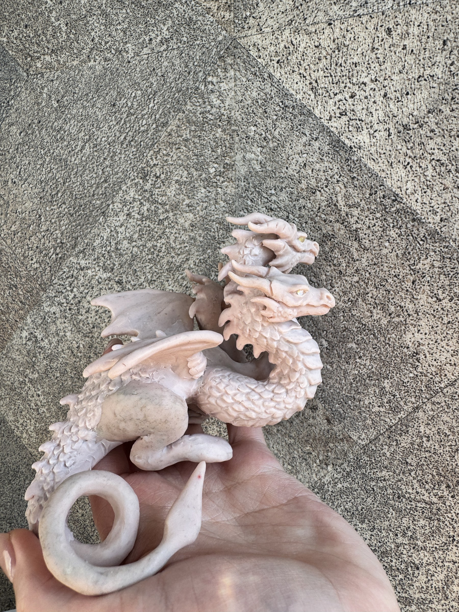
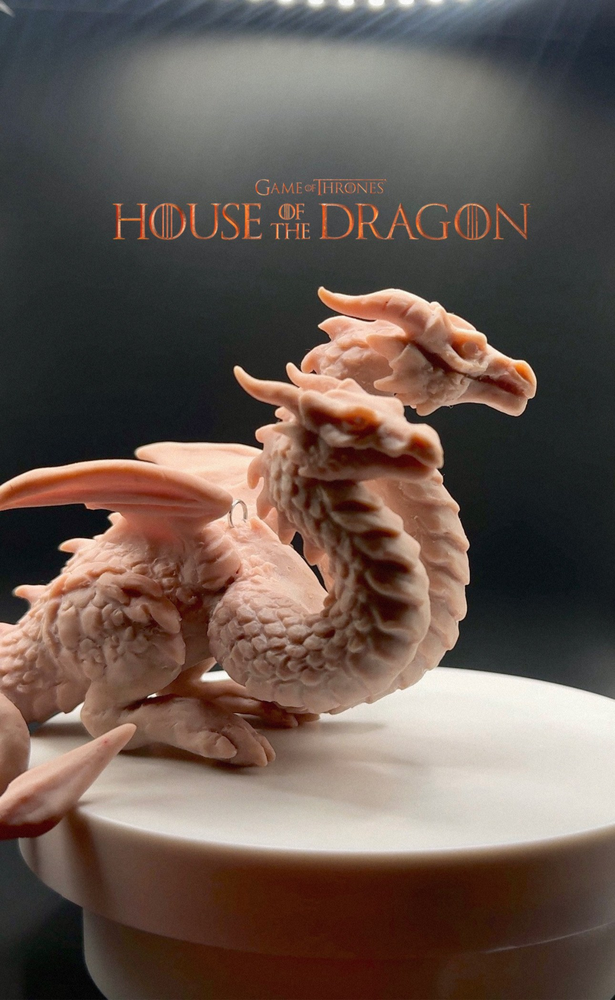

Древние Существа
Белый Дракон
Единственный Житель



Легенда
История Жителя
Он приходит из мест, где снег лежит на камнях даже летом, а ветер помнит имена первых звёзд. Белый Дракон не охраняет сокровища — он хранит тишину, в которой человек наконец слышит себя.
ХарактерНаблюдательный, спокойный, гордый. Не любит суеты, но остаётся рядом, когда особенно нужен.
Мир происхожденияДревние Существа
СтатусЕдинственный Житель
Рабочее описание. Точные материалы, размеры и дата рождения будут добавлены после уточнения у Веры.